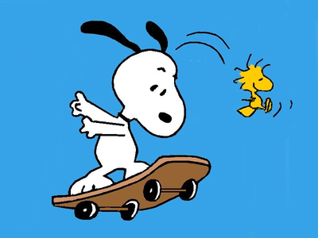
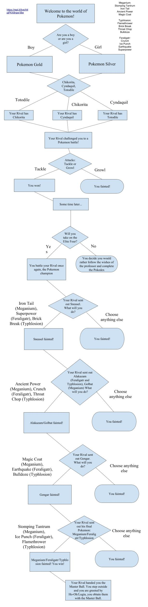

My Portfolio
Navigation
Meja ManPokémon CYOA
Meja Man


Description
Meja Man has a score to settle with his older brother, Porto Man!
Through this 2-D 2-player 1v1 fighter style game, This fiery dispute between two brothers
can finally be resolved! In this game, scores are accounted for through a health-bar system!
To add spice to every battle, a random map of three custom-made maps are chosen to fight to the
fullest! Although there isn't an AI that gets increasingly harder, the opponent you choose to play against
might prove to be challenging! To win, the two players duel till one of the two players reaches zero health!
Reflection
Q: Why did you make the game you created? What was the inspiration?
A: My partner and I believed that we could make a unique player vs player fighter game. Turns out,
we were the only ones that made a 2-player game in our period, inspired by the iconic figure, Megaman!
Q: What were two successful points in the development process of your game?
A: I believe that two successful points in the development process of our
game was the implementation of our sprites and configurations for the controls!
Q: What were two obstacles in the development process of your game? How did you overcome them?
A: One obstacle in the development of our game was the inclusion of a gravitational mechanic
that allowed players to jump up and down To overcome this, we through a process of trial and error
to solve this issue. Another obstacle in the development of our game was getting our menu screen to
animate. With the help of my partner, he was able to get it working just fine through a simple loop script.
Q: What aspects of the game would you change or improve if you had more time or resorces?
A: If my partner and I had more time, we would've definitely improved the help screen UI, as it was
rushed in preparation of the game showcase. And if possible, add stages with more interaction such as platforms.
Significant Algorithm

This is an algorithm because it detects whether or not the player is
inputing a specific key, in which it responds with the corresponding action. This
algorithm applies gravity to both players, such as jumping up and down respectively.
More Blocks Creation

Awards
MEJA MAN won the title of best looking game forperiod 6 of Ms. Terry's AP computer science principles class!

Pokémon CYOA
Description
Will you choose to complete the Pokédex or become the next Pokémon champion?
Through this CYOA, the player will be able to choose their own Pokémon, battle their rival,
and become the next Pokémon champion! However, it will not be easy. As this CYOA follows the
storyline of a generic Pokémon game with actual implementation of the battle system from Pokémon!
This means that the player will need the knowledge to battle their way to the top through several Pokémon battles!

Incremental and Iterative Development
When working on this CYOA, one of the incremental processes we had to go through was tediously
recreating a different scene for each battle. We had to add each option and outcome piece by piece
until each Pokémon battle was unique and eventually resulted in another Pokémon battle to initiate.
Most of the incremental development was done by my partner. On the other hand, most of the iterative
development was done by me. I developed most of the dialogue and mechanics of the game, which required
many instances where I had to call each function over and over until it all fell into place and worked
the way I wanted it to work. Such as making sure the dialogue didn't randomly cut off or making sure that
the option choosen by the player would result into the desired outcome. Difficulties I encountered while
developing this game was an issue of a scene not linking to the next scene that was supposed to occur after.
To fix this, my partner made the code easier and more organized by using less lines and simple IDs. Through
that, I was able to affix the dialogue to each scene properly and eventually each scene stopped breaking.
An oppurtunity we found when developing the game was asking the amazing Ms. Berry, who helped us by providing
a method to keep data that the player had influenced at the beginning of the story to later be recalled in another scene.
Procedural Abstraction
Organizing our story scenes into functions are a form of procedural abraction because it separates each scene
into its own function, simplifying the process of creating this CYOA by reducing complexity and making the process
more efficient. The advantages of abstracting our scenes into functions are that it helps us puts each function into
pieces that are far less confusing to code than one singular block of code that can be hard to follow if not coded all
at once.
Personally, I liked the book "The Reason I Jump" by Naoki Higashida because he conveys how it's like to live with autism
and gave me a unique perspective through his eyes.